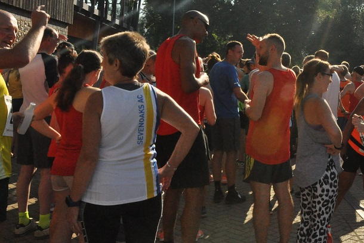

Five Sevenoaks AC runners tackled the Kent GP Dartford 10k on August bank holiday Monday in sapping heat. Andrew Milne had a good run in 27th place overall to lead home his veteran clubmates. The SAC results were as follows:
| Pos | Bib | Name | Time | Cat | CPos | Gen | GPos | Club |
|---|---|---|---|---|---|---|---|---|
| 27 | 242 | Andrew Milne | 00:41:17 | Senior M | 17 | Male | 27 | Sevenoaks AC |
| 106 | 94 | Simon Hallpike | 00:50:53 | MV 60+ | 4 | Male | 88 | Sevenoaks AC |
| 150 | 280 | Sarah Shewell | 00:53:57 | FV 55+ | 5 | Female | 28 | Sevenoaks AC |
| 232 | 202 | Lionel Stielow | 01:00:49 | MV 60+ | 14 | Male | 171 | Sevenoaks AC |
| 303 | 230 | Sylvia Lewis | 01:09:30 | FV 55+ | 26 | Female | 94 | Sevenoaks AC |

The full results are here.